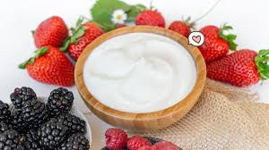

di sini kami menjual yogurth
Yogurt adalah produk susu yang dibuat melalui fermentasi bakteri pada susu. Proses ini melibatkan bakteri baik, seperti Lactobacillus bulgaricus dan Streptococcus thermophilus, yang mengubah laktosa (gula dalam susu) menjadi asam laktat, memberikan yogurt rasa asam dan tekstur yang kental. Yogurt kaya akan protein, kalsium, serta probiotik yang baik untuk kesehatan pencernaan. Yogurt bisa dinikmati dalam berbagai rasa, baik alami maupun dengan tambahan buah atau pemanis.
